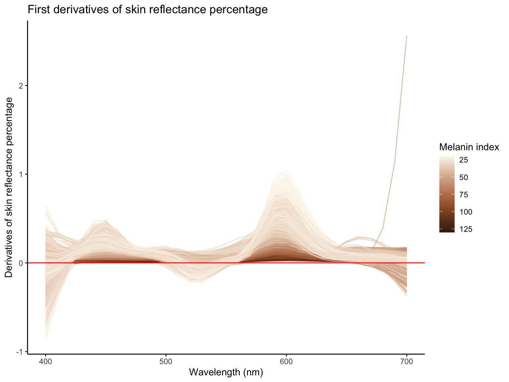
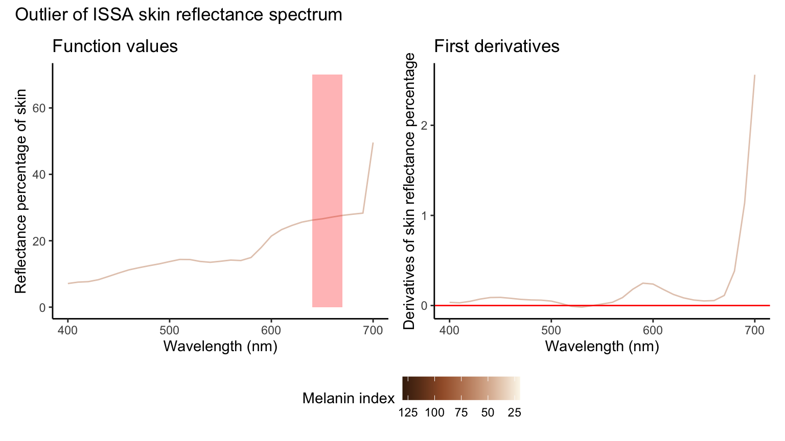
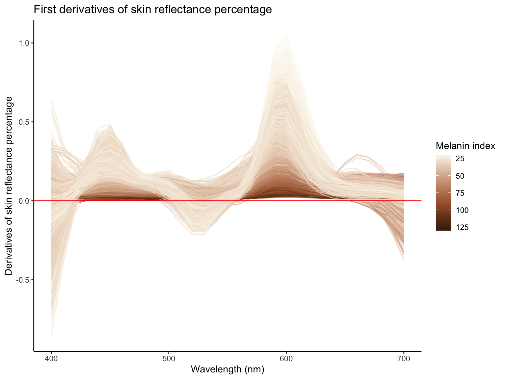
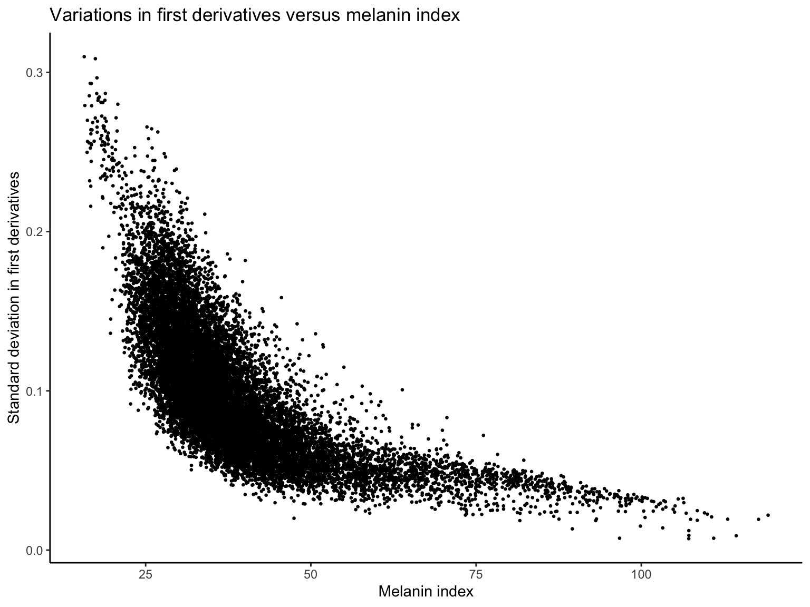

Shape analysis for skin reflectance spectrum
Junhui He
2025-10-02
Last updated: 2025-10-02
Checks: 7 0
Knit directory: SkinSpectrum/
This reproducible R Markdown analysis was created with workflowr (version 1.7.1). The Checks tab describes the reproducibility checks that were applied when the results were created. The Past versions tab lists the development history.
Great! Since the R Markdown file has been committed to the Git repository, you know the exact version of the code that produced these results.
Great job! The global environment was empty. Objects defined in the global environment can affect the analysis in your R Markdown file in unknown ways. For reproduciblity it’s best to always run the code in an empty environment.
The command set.seed(20250822) was run prior to running
the code in the R Markdown file. Setting a seed ensures that any results
that rely on randomness, e.g. subsampling or permutations, are
reproducible.
Great job! Recording the operating system, R version, and package versions is critical for reproducibility.
Nice! There were no cached chunks for this analysis, so you can be confident that you successfully produced the results during this run.
Great job! Using relative paths to the files within your workflowr project makes it easier to run your code on other machines.
Great! You are using Git for version control. Tracking code development and connecting the code version to the results is critical for reproducibility.
The results in this page were generated with repository version 101b37d. See the Past versions tab to see a history of the changes made to the R Markdown and HTML files.
Note that you need to be careful to ensure that all relevant files for
the analysis have been committed to Git prior to generating the results
(you can use wflow_publish or
wflow_git_commit). workflowr only checks the R Markdown
file, but you know if there are other scripts or data files that it
depends on. Below is the status of the Git repository when the results
were generated:
Ignored files:
Ignored: .DS_Store
Ignored: .Rhistory
Ignored: .Rproj.user/
Untracked files:
Untracked: analysis/checkpoints/skin_wgan_gp.pth
Untracked: data/s_pred.csv
Untracked: data/test_derivative.csv
Untracked: data/test_skin_reflectance.csv
Untracked: data/y_pred.csv
Unstaged changes:
Modified: analysis/out_of_distribution.ipynb
Modified: data/resample_derivative.csv
Modified: data/resample_skin_reflectance.csv
Note that any generated files, e.g. HTML, png, CSS, etc., are not included in this status report because it is ok for generated content to have uncommitted changes.
These are the previous versions of the repository in which changes were
made to the R Markdown (analysis/skin-reflectance.Rmd) and
HTML (docs/skin-reflectance.html) files. If you’ve
configured a remote Git repository (see ?wflow_git_remote),
click on the hyperlinks in the table below to view the files as they
were in that past version.
| File | Version | Author | Date | Message |
|---|---|---|---|---|
| Rmd | 101b37d | Junhui He | 2025-10-02 | add realism scorer |
| Rmd | 0bda0cb | Junhui He | 2025-10-01 | update |
| Rmd | 83643ba | Junhui He | 2025-10-01 | resample skin reflectance |
| html | 042c551 | Junhui He | 2025-09-24 | Build site. |
| Rmd | e0b385d | Junhui He | 2025-09-24 | wflow_publish("analysis/skin-reflectance.Rmd") |
| Rmd | 5d39caa | Junhui He | 2025-09-24 | within-individual analysis |
| html | 5d39caa | Junhui He | 2025-09-24 | within-individual analysis |
1 Introduction to the ISSA Dataset
The International Skin Spectra Archive (ISSA) offers a detailed collection of spectral and colorimetric data for human skin, encompassing 15,256 records from 2,113 subjects. This data spans from 2012 to 2024 and originates from eleven datasets curated by international laboratories across eight countries: the UK, Spain, China, Japan, Pakistan, Thailand, Iraq, and Saudi Arabia. Each dataset follows a standardised measurement protocol to maintain data consistency.
In the ISSA dataset, individual records provide extensive details including record number, data origin, subject identification, and skin type—categorised by ethnicity, gender, age, and body location. The dataset also includes detailed information on the measurement instruments used, such as type, specular component inclusion, wavelength range and interval.
Alongside spectral data, each sample also contains CIE colorimetric data, including tristimulus values, xy chromaticity coordinates, CIELAB parameters, etc., based on the CIE 1931 standard colorimetric observer and the CIE standard illuminant D65.
1.1 Data Records
The datasheet arranges data across columns labelled A to BQ:
- A: Unique record identifier
- B: Data origin
- C: Subject number
- D to G: Ethnicity, gender, age group, and body location
- H to L: Instrument details including type and spectral measurement specifics
- N to BD: Spectral data from 360 nm to 780 nm
- BF to BQ: CIE colorimetric data
1.2 Skin Type
- Ethnicity: CA (Caucasian), CN (Chinese), SA (South Asian), AF (African), IQ (Iraqi), TH (Thai), JP (Japanese), AB (Arabian)
- Gender: F (Female), M (Male)
- Body Location: 1 (Back of Hand), 2 (Cheek), 3 (Cheek bone), 4 (Chin), 5 (Ear Lobe), 6 (Forehead), 7 (Inner arm), 8 (Neck), 9 (Nose tip), 10 (Outer arm), 11 (Palm), 12 (Ring finger)
1.3 Visualization
We visualize the skin reflectance curves across all ethnicity and body locations in the following figure:
Furthermore, we visualize the skin reflectance curves per body location in the following figure:

2 Derivative analysis
2.1 First derivative calculation
We calculate the derivatives of the function to measure its growth rate. Especially, we estimate the first derivatives using local polynomial regression. The polynomial degree is 2, and the bandwidth is selected by direct plug-in methodology, which is about 13 nm.

There is one first-derivative curve that behaves noticeably differently, particularly around the 700 nm wavelength. To examine whether it is an outlier, we plot its reflectance values and derivatives side by side.

Then we remove the outlier, and plot the first derivatives without outlier.

2.2 Variations in the first derivatives
We observe that higher curves tend to be more oscillatory, whereas lower curves appear flatter. To examine this pattern, we compute the standard deviation of the first derivatives as a measure of oscillation. The figures below show a clear negative relationship between the variation of the first derivatives and melanin index.

2.3 Peak and valley detection
From the derivative plot, we observe roughly three peaks or valleys within the ranges [410, 500], [500, 570], and [570, 700]. Our goal is to identify the locations of these peaks and valleys, as they provide biologically meaningful information. For each skin reflectance curve, we partition it into the three ranges and determine the corresponding peak or valley within each range. We then collect these peak/valley locations across all curves. The resulting peak/valley samples are displayed as the following boxplot.
| group | min | 25% quantile | median | mean | 75% quantile | max |
|---|---|---|---|---|---|---|
| First peak | 410 | 440 | 450 | 450.1285 | 450 | 500 |
| Valley | 520 | 530 | 530 | 529.7726 | 530 | 540 |
| Second peak | 570 | 590 | 590 | 596.4077 | 600 | 700 |
2.4 Calculate melanin index at the peak wavelength
From the peak–valley analysis, the valley wavelength is 530 nm and the highest (second) peak occurs at 600 nm. Biologically, the valley wavelength is associated with the erythema index, while the peak wavelength is associated with the melanin index. Accordingly, we compute the erythema index at 530 nm and the melanin index at 600 nm. In subsequent visualizations, we color the skin reflectance curves by a modified melanin index evaluated at the peak wavelengths identified in our analysis.
3 Within-individual analysis
In this section, we explore the relationship between skin reflectance spectrum at different body locations within the same individual. We will visualize the skin reflectance curves colored by body location to examine the dependency across body parts. Furthermore, we will predict the skin reflectance spectrum at one body location conditioned on other body locations.
3.1 Visualize within-individual skin reflectance curves at different body locations
The following figure shows the skin reflectance curves for nine randomly selected individuals.
| Version | Author | Date |
|---|---|---|
| 042c551 | Junhui He | 2025-09-24 |
3.2 Predict skin reflectance spectrum at one body location conditioned on other body locations
We use separate linear regression models to predict the skin reflectance spectrum at a given body location using spectra from other locations, wavelength by wavelength. Specifically, at wavelength \(t\), let the reflectance curve at the target body location be denoted by \(Y_i(t)\), and the reflectance curves at the other locations by \(X_{i1}(t),\ldots, X_{iJ}(t)\). We fit the model \[Y_i(t) = \sum_{j=1}^J X_{ij}(t)\beta_j(t) + \varepsilon_i(t),\] where \(t\) ranges from 400 nm to 700 nm, and \(\beta_j(t)\) is the coefficient function for body location \(j\), and \(\varepsilon_i(t)\) is the residual error term.
Due to the limited number of individuals with measurements across all 12 body locations, we restrict attention to the 225 individuals with complete measurements at 8 body locations: Cheek, Forehead, Chin, Back of Hand, Inner arm, Outer arm, Neck and Palm. The following table shows the number of individuals with measurements available at each location.
| Body location | Number of individuals |
|---|---|
| Cheek | 2511 |
| Forehead | 2092 |
| Chin | 2072 |
| Back of Hand | 1716 |
| Inner arm | 1692 |
| Outer arm | 1632 |
| Neck | 1162 |
| Palm | 778 |
| Nose tip | 646 |
| Ear Lobe | 480 |
| Ring finger | 243 |
| Cheek bone | 232 |
The skin reflectance curves for the 225 individuals at the 8 body locations are shown in the following figure.
| Version | Author | Date |
|---|---|---|
| 042c551 | Junhui He | 2025-09-24 |
The skin reflectance curves at the Forehead, Inner arm, Outer arm and Palm within the same individual are shown in the following figure.

Without loss of generality, we focus on predicting the skin reflectance spectrum at the Palm location using measurements from the other seven body locations. The 225 individuals are randomly divided into a training set of 180 and a test set of 45. At each wavelength, we fit the linear regression model using the training set and then predict the Palm reflectance spectrum for individuals in the test set.
The following figure shows the prediction versus ground truth results for 9 randomly selected individuals in the test set.
| Version | Author | Date |
|---|---|---|
| 042c551 | Junhui He | 2025-09-24 |
The following figure shows the prediction results for all 45 individuals in the test set.
| Version | Author | Date |
|---|---|---|
| 042c551 | Junhui He | 2025-09-24 |
4 Classify whether skin reflectance curves are realistic or not
In this section, we use the GAN discriminator embedding + Mahalanobis distance as a “realism score” model for skin reflectance curves. The input to the model is a skin reflectance curve with its first derivative \((x,x')\in \mathbb{R}^{2T}\) (fixed length after resampling). The output is a score indicating how realistic the input curve is. A higher score indicates a more realistic curve.
4.1 Pipeline
- Prepare data.
Gather real curves and calculate the derivatives. Resample to a common grid of length \(T=64\). Concatenate the resampled curves and derivatives to form a \(2T\)-dimensional vector.
Standardize per wavelength or per curve (z-score); keep stats from training only.
Split: train (for GAN), val-ID (for threshold tuning).
- Model Choice.
Use a WGAN-GP (more stable than vanilla GAN for 1-D signals).
Generator \(G(z)\): maps Gaussian noise to a curve.
Discriminator/Critic \(D(x)\): 1-D CNN that outputs a real number (the Wasserstein “realness” score).
- Train the GAN.
Loss: WGAN with gradient penalty.
Optimize \(D\) several steps per \(G\) step (e.g., 5:1).
- Fit a Gaussian to the discriminator features.
Freeze \(D\). Take the second-to-last layer of \(D\) as an embedding.
Pass all training data through \(D\) to get training embeddings.
Fit a Gaussian (mean \(\mu\), covariance \(\Sigma\)) to the training embeddings.
- Calibrate the realism threshold.
Pass val-ID data through \(D\) to get val embeddings \(e\). Compute Mahalanobis distances to \((\mu, \Sigma)\) by \((e-\mu)^\top \Sigma^{-1} (e-\mu)\) as an out-of-distribution (OOD) score.
Choose a threshold \(\tau\) on the OOD score to achieve a desired true positive rate (TPR) on val-ID.
- Inference.
For a new curve, compute its derivative, resample, standardize, and concatenate to form \((x,x')\).
Pass \((x,x')\) through \(D\) to get embedding \(e\). Score \(s\) by Mahalanobis distance to \((\mu, \Sigma)\).
If \(s < \tau\), classify as realistic; else, non-realistic.
4.2 Test evaluation
4.2.1 Generate test set
We generate a test set of 600 curves, including 300 real curves from ISSA and 300 fake curves. The fake curves are generated from two categories: (1) sine wave with negative amplitude + noise; (2) sine wave with positive amplitude + noise. The following figure shows the real and fake skin reflectance curves in the test set.

4.2.2 Evaluate test set
We load the pre-trained GAN discriminator and Gaussian parameters to evaluate the test set. The following table shows the evaluation performance in the test set.
| Method | Threshold | Accuracy | True positive rate | False positive rate | AUROC |
|---|---|---|---|---|---|
| GAN embedding + M-distance | 5th quantile | 0.98 | 0.96 | 0.96 | 1 |
We also visualize the classification results in the test set. The following figure shows the skin reflectance curves classified as realistic and non-realistic, respectively.

The false negative cases are shown in the following figure.

R version 4.3.1 (2023-06-16)
Platform: aarch64-apple-darwin20 (64-bit)
Running under: macOS 15.6.1
Matrix products: default
BLAS: /Library/Frameworks/R.framework/Versions/4.3-arm64/Resources/lib/libRblas.0.dylib
LAPACK: /Library/Frameworks/R.framework/Versions/4.3-arm64/Resources/lib/libRlapack.dylib; LAPACK version 3.11.0
locale:
[1] en_US.UTF-8/en_US.UTF-8/en_US.UTF-8/C/C/en_US.UTF-8
time zone: America/Detroit
tzcode source: internal
attached base packages:
[1] splines stats graphics grDevices utils datasets methods
[8] base
other attached packages:
[1] fda_6.3.0 deSolve_1.40 fds_1.8 RCurl_1.98-1.17
[5] rainbow_3.8 pcaPP_2.0-5 MASS_7.3-60 KernSmooth_2.23-21
[9] openxlsx_4.2.8 scales_1.4.0 lubridate_1.9.4 forcats_1.0.0
[13] stringr_1.5.1 dplyr_1.1.4 purrr_1.0.4 readr_2.1.5
[17] tidyr_1.3.1 tibble_3.2.1 ggplot2_3.5.2 tidyverse_2.0.0
[21] patchwork_1.3.1 knitr_1.50 workflowr_1.7.1
loaded via a namespace (and not attached):
[1] gtable_0.3.6 xfun_0.52 bslib_0.9.0 ks_1.15.1
[5] processx_3.8.6 lattice_0.21-8 callr_3.7.6 tzdb_0.5.0
[9] bitops_1.0-9 vctrs_0.6.5 tools_4.3.1 ps_1.9.1
[13] generics_0.1.4 cluster_2.1.4 pkgconfig_2.0.3 Matrix_1.5-4.1
[17] RColorBrewer_1.1-3 lifecycle_1.0.4 compiler_4.3.1 farver_2.1.2
[21] git2r_0.36.2 getPass_0.2-4 httpuv_1.6.16 htmltools_0.5.8.1
[25] sass_0.4.10 yaml_2.3.10 pracma_2.4.4 later_1.4.2
[29] pillar_1.10.2 jquerylib_0.1.4 whisker_0.4.1 cachem_1.1.0
[33] mclust_6.1.1 tidyselect_1.2.1 zip_2.3.3 digest_0.6.37
[37] mvtnorm_1.3-3 stringi_1.8.7 labeling_0.4.3 rprojroot_2.0.4
[41] fastmap_1.2.0 grid_4.3.1 colorspace_2.1-1 cli_3.6.5
[45] magrittr_2.0.3 withr_3.0.2 promises_1.3.3 timechange_0.3.0
[49] rmarkdown_2.29 httr_1.4.7 hms_1.1.3 evaluate_1.0.3
[53] rlang_1.1.6 Rcpp_1.0.14 hdrcde_3.4 glue_1.8.0
[57] rstudioapi_0.17.1 jsonlite_2.0.0 R6_2.6.1 fs_1.6.6